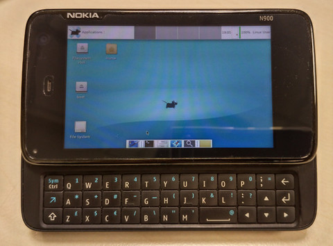

Nokia N900 >> PostMarketOS
安裝系統
參考資訊：
1. Nokia_N900
2. pmbootstrap
3. postmarketOS
4. Installing_postmarketOS_on_the_Nokia_N900
PC(Debian x64)
$ sudo apt-get install python3.0 qemu-user-static
$ cd ~/Downloads/
$ wget https://github.com/postmarketOS/pmbootstrap/archive/0.3.0.tar.gz
$ tar xvf 0.3.0.tar.gz
$ cd pmbootstrap-0.3.0
$ vim aports/cross/qemu-user-static-repack/APKBUILD
source="https://deb.sipwise.com/debian/pool/main/q/qemu/qemu-user-static_${_debver}.deb"
$ ./pmbootstrap.py init
[17:13:11] Target device (either an existing one, or a new one for porting).
[17:13:11] Available (36): amazon-thor, asus-flo, asus-grouper, fairphone-fp2, htc-ace, htc-bravo, huawei-angler, huawei-y530, lg-d285, lg-d855, lg-dory, lg-hammerhead, lg-lenok, lg-mako, motorola-osprey, motorola-titan, nokia-rx51, oneplus-bacon, oneplus-onyx, qemu-aarch64, qemu-amd64, qemu-vexpress, samsung-i747m, samsung-i9003, samsung-i9070, samsung-i9100, samsung-i9305, samsung-maguro, samsung-n7100, sony-amami, sony-aries, sony-castor-windy, sony-honami, sony-yuga, t2m-flame, wiko-lenny3
[17:13:11] Device [nokia-rx51]: nokia-rx51
[17:13:13] Available keymaps for device (1): us/rx51_us
[17:13:13] Keymap [us/rx51_us]:
[17:13:13] Username [steward]:
[17:13:13] Available user interfaces (3):
[17:13:13] * weston: (Wayland) Reference compositor (demo, not a phone interface)
[17:13:13] * none: No graphical environment
[17:13:13] * hildon: (X11) Lightweight GTK+2 UI (optimized for single-touch touchscreens)
[17:13:13] * xfce4: (X11) Lightweight GTK+2 desktop (stylus recommended)
[17:13:13] User interface [xfce4]:
[17:13:13] Location of the 'work' path. Multiple chroots (native, device arch, device rootfs) will be created in there.
[17:13:13] Work path [/home/steward/.local/var/pmbootstrap]:
[17:13:14] How many jobs should run parallel on this machine, when compiling?
[17:13:14] Jobs [5]:
[17:13:15] Rebuild packages, when the last modified timestamp changed, even if the version did not change? This makes pmbootstrap behave more like 'make'.
[17:13:15] Timestamp based rebuilds (y/n) [y]:
[17:13:20] Additional packages that will be installed to rootfs. Specify them in a comma separated list (e.g.: vim,file) or "none"
[17:13:20] Extra packages [xf86-video-vesa,mesa-egl,linux-firmware]:
[17:13:20] Your host timezone: ROC
[17:13:20] Use this timezone instead of GMT? (y/n) [y]:
[17:13:24] Zap existing chroots to apply configuration? (y/n) [y]:
...
$ ./pmbootstrap.py install --sdcard /dev/sdX --no-fde
...
$ ./pmbootstrap.py shutdown
Maemon
$ sudo vim /etc/bootmenu.d/10-pmos.item
ITEM_NAME="postmarketOS"
ITEM_SCRIPT="boot.scr"
ITEM_DEVICE="${EXT_CARD}p1"
ITEM_FSTYPE="ext2"
$ u-boot-update-bootmenu
$ sudo reboot
完成
